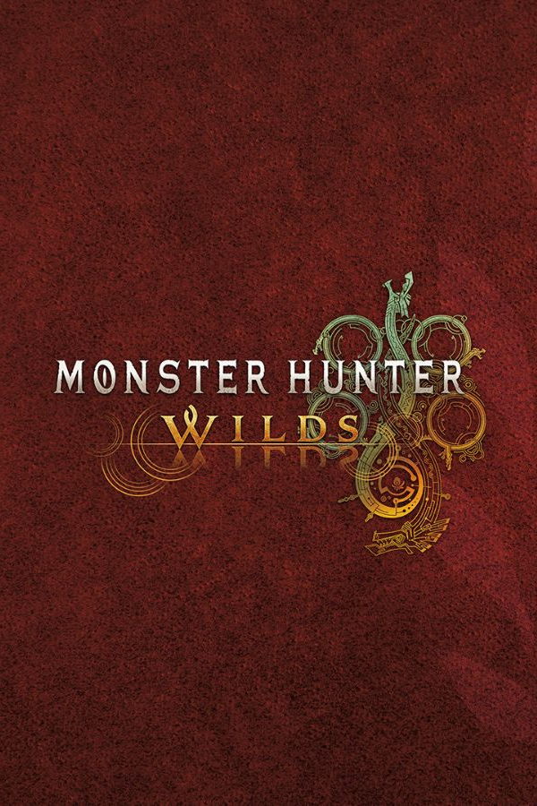

Game profile

Monster Hunter Wilds
Every archived year-end list appearance, including placement and points earned.
About the Game
Monster Hunter Wilds. The next generation in the genre defining series. Launching in 2025 on PS5, Xbox Series X|S, and PC/Steam.
| Released | 2025-02-27 |
|---|---|
| Developer | Capcom |
| Publisher | Capcom |
| Genres | Action, Adventure, RPG |
| Platforms | PC, PlayStation 5, Xbox Series S/X |
SingleplayerSteam AchievementsMultiplayerFull controller supportSteam CloudAtmosphericGreat SoundtrackRPGCo-opOpen WorldcooperativeThird Person
Where to Buy
Game information provided by RAWG.
12List appearances
1Years represented
Points by Year
342025 points
List History
| Year | Source | List | Placement | Points |
|---|---|---|---|---|
| 2025 | CNET | Top 10 Games of the Year in 2025 | Unranked | 5 |
| 2025 | Deep Games | GOTY 2025: Os 25 Melhores Jogos do Ano | 22 | 3 |
| 2025 | Dexerto | The 20 best games of 2025 | 13 | 3 |
| 2025 | Empire | The Best Games Of 2025 As Ranked By Empire Magazine | 9 | 5 |
| 2025 | ESPN | The 25 best video games of 2025 | Unranked | 3 |
| 2025 | FullCleared | FullCleared's Favorite Games of 2025 | 12 | 3 |
| 2025 | GameSpot | The Best Games Of 2025 | Unranked | 1 |
| 2025 | GamesRadar+ | GamesRadar+ GOTY: The 25 Best Games of 2025 | 22 | 3 |
| 2025 | Geeky Brummie | Top 50 Most Notable Games of 2025 | 20 | 3 |
| 2025 | NME | THE 20 BEST GAMES OF 2025 | NME.com | 19 | 3 |
| 2025 | NPR | The best games of 2025, picked by NPR's staff | Unranked | 1 |
| 2025 | SUPERJUMP | 50 Outstanding Games Released in 2025 | Unranked | 1 |